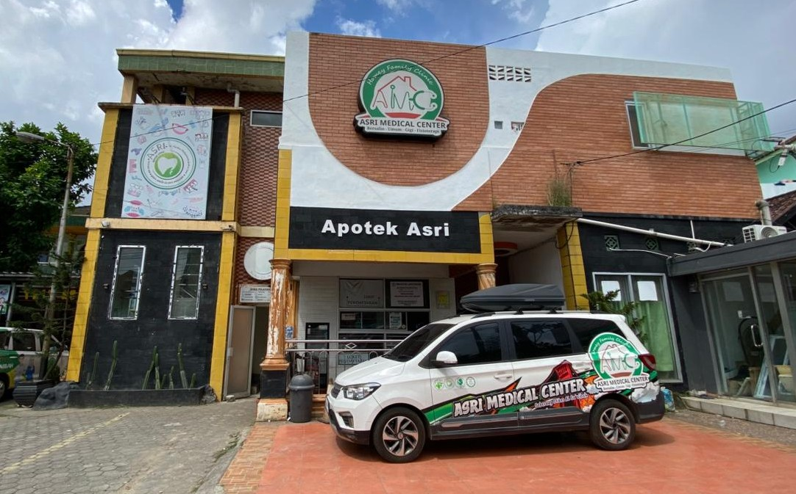
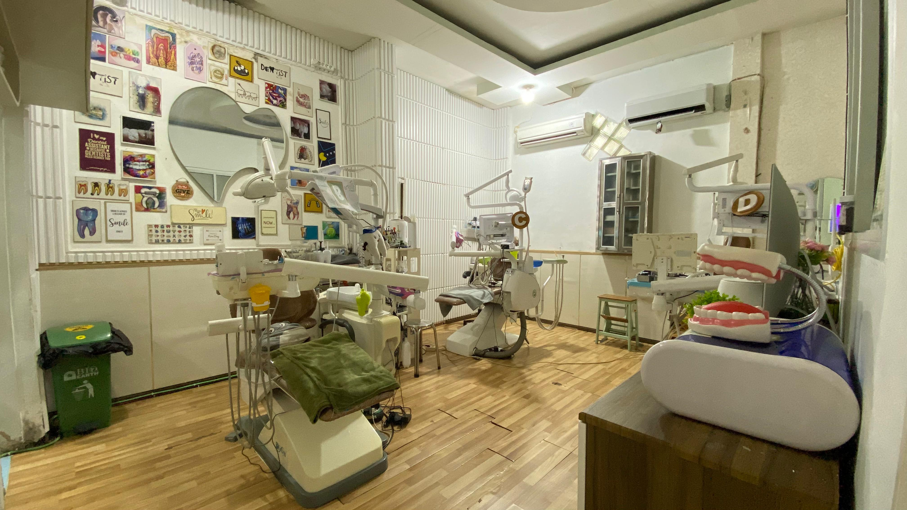
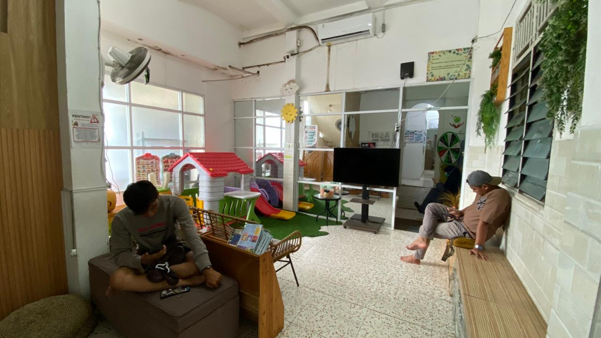
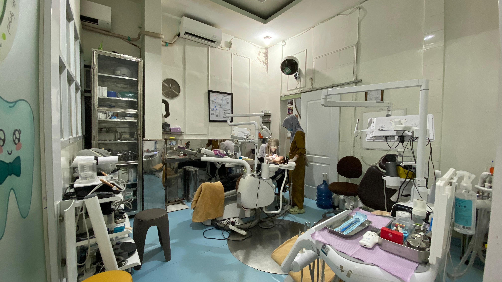
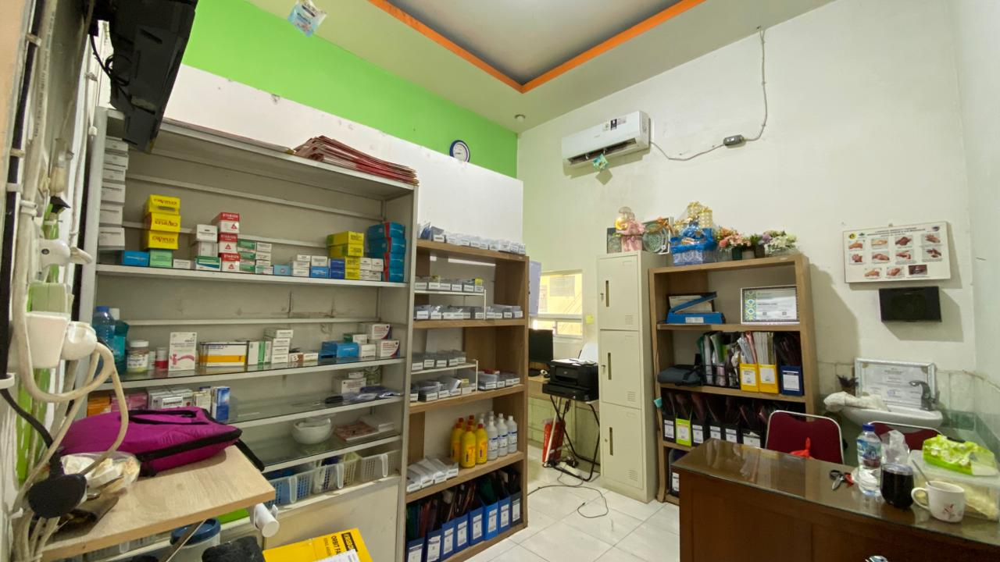
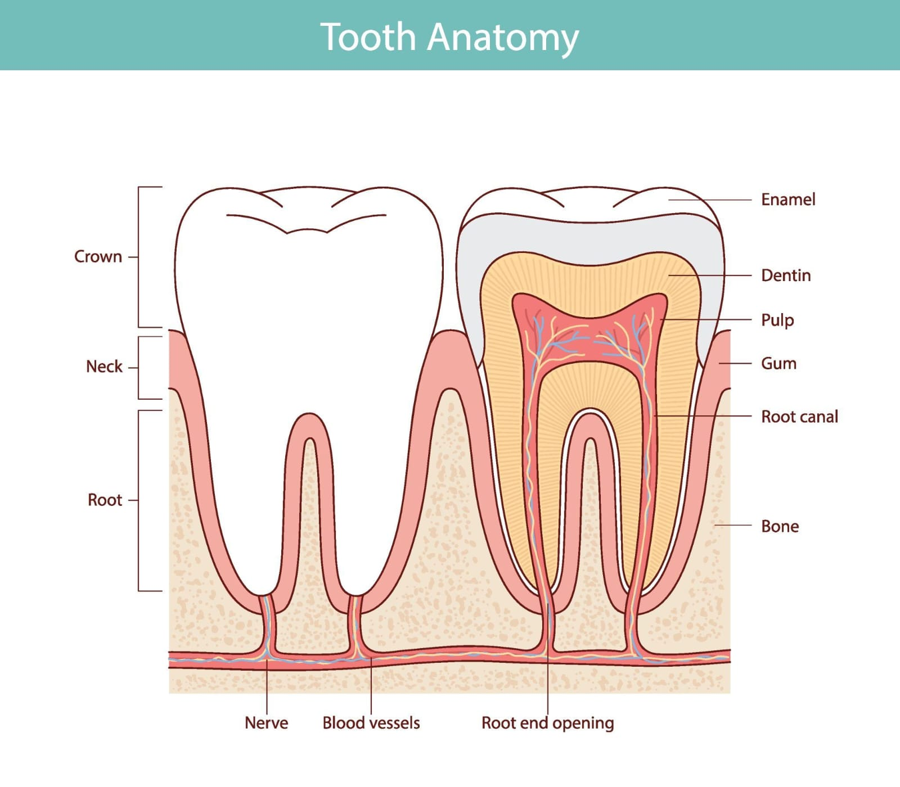

Asri Dental Clinic
Klinik Gigi & Mulut terpercaya di Palembang dengan tenaga profesional berpengalaman, peralatan modern, dan pelayanan yang ramah. Kami berkomitmen memberikan senyum terbaik untuk setiap pasien.
Pemeriksaan & Konsultasi
Pemeriksaan menyeluruh kondisi gigi, gusi, dan jaringan mulut. Termasuk konsultasi rencana perawatan.
Penambalan Gigi
Restorasi karies dengan bahan GIC, komposit sewarna gigi, atau amalgam. Estetis dan tahan lama.
Pencabutan Gigi
Pencabutan gigi sulung anak maupun gigi dewasa dengan anestesi lokal. Aman dan minim rasa sakit.
Scalling (Karang Gigi)
Pembersihan karang gigi dan plak dengan ultrasonic scaler. Mencegah periodontitis dan bau mulut.
Perawatan Saluran Akar (PSA)
Perawatan endodontik untuk gigi dengan infeksi pulpa. Menyelamatkan gigi dari pencabutan.
Bleaching / Pemutihan Gigi
Pemutihan gigi profesional di klinik maupun take-home kit. Hasil cerah hingga 5–8 shade lebih terang.
Mahkota & Jembatan (Crown & Bridge)
Restorasi protesa cekat dari bahan porcelain fused metal atau all-ceramic untuk estetika optimal.
Perawatan Gigi Anak
Penambalan SSC (stainless steel crown), aplikasi fluor varnish, dan edukasi sikat gigi untuk si kecil.
Pemasangan Kawat Gigi
Ortodonti cekat (bracket metal/ceramic) untuk merapikan susunan gigi.
Gigi Palsu (Denture)
Protesa lepasan akrilik maupun flexi untuk menggantikan gigi yang hilang. Nyaman dan natural.
Ruang Tunggu Nyaman
AC, TV, WiFi gratis, dan minuman untuk pasien
Area Bermain anak
Fasilitas bermain yang aman dan edukatif untuk membantu anak merasa lebih nyaman sebelum perawatan.
Sistem Antrian Digital
Pendaftaran online via gform
Area Parkir Luas
Parkir gratis untuk motor & mobil pasien
Ruang Perawatan Gigi Modern
Dilengkapi dental unit dan peralatan terkini untuk menunjang pelayanan kesehatan gigi yang optimal.
Mushola
Tersedia tempat ibadah yang bersih dan nyaman bagi pasien maupun pendamping selama berada di klinik.
🕐 Jam Operasional
| Senin – Jumat | 09.00 – 20.00 WIB |
| Sabtu - Minggu | 09.00 – 13.00 WIB |
| Hari Libur Nasional | Tutup |





Klik foto untuk memperbesar · Ganti dengan foto asli klinik Anda
Peran Kesehatan Gigi dalam Mendukung 6 Isu Strategis Pembangunan Kesehatan Nasional
Sebagai calon Sarjana Terapan Kesehatan Gigi, kita memiliki peluang strategis untuk berkontribusi nyata terhadap seluruh isu prioritas nasional 2026 — mulai dari tata kelola JKN hingga pencegahan stunting. Berikut paparan program konkret yang dapat dilaksanakan.
Baca SelengkapnyaProgram Kesehatan Gigi sebagai Pilar Pembangunan Kesehatan 2026
Indonesia tengah menghadapi enam isu strategis kesehatan yang menentukan kualitas sumber daya manusia bangsa. Sebagai tenaga kesehatan gigi, kita bukan sekadar pelaksana teknis pencabutan dan penambalan — kita adalah garda terdepan pencegahan, promotor kesehatan, dan agen perubahan perilaku masyarakat.
💡 Fakta Kunci: Kesehatan rongga mulut merupakan cermin kesehatan sistemik. Infeksi gigi dapat memengaruhi diabetes, penyakit jantung, dan kelahiran prematur — menjadikannya isu lintas program yang tidak dapat diabaikan.
1. 🏛️ Tata Kelola Jaminan Kesehatan (JKN)
Program yang dapat dilakukan: Optimalisasi pencatatan dan pelaporan pelayanan gigi di Puskesmas melalui sistem P-Care BPJS. Memastikan setiap pasien yang memenuhi syarat mendapatkan akses pelayanan gigi gratis sesuai hak JKN-nya. Melakukan edukasi kepada masyarakat tentang manfaat layanan gigi yang ditanggung BPJS agar tidak terjadi underutilization.
- Sosialisasi manfaat JKN untuk gigi (pencabutan, penambalan, scalling) kepada peserta
- Peningkatan mutu pencatatan medis gigi untuk mendukung akuntabilitas klaim
- Partisipasi aktif dalam program Prolanis bagi penderita diabetes dan hipertensi (yang berisiko tinggi komplikasi gigi)
2. 🦠 Pengendalian Penyakit Menular
Rongga mulut adalah pintu masuk utama berbagai patogen. Infeksi periodontal kronis dapat menurunkan imunitas dan meningkatkan risiko infeksi sistemik. Program utama yang dapat dilakukan:
- Skrining kesehatan gigi pada pasien TB, HIV, dan diabetes di Puskesmas (komorbiditas oral)
- Implementasi sterilisasi instrumen gigi berstandar tinggi (autoclave, single-use item) sebagai pencegahan infeksi nosokomial
- Edukasi kebersihan mulut bagi penderita penyakit menular untuk mencegah infeksi sekunder oral
- Kolaborasi lintas program dengan TB dan HIV dalam skrining lesi mulut
3. 🔒 Keamanan Data Digital Kesehatan
Rekam medis gigi mengandung data sensitif pasien. Sebagai tenaga kesehatan masa depan, literasi keamanan data adalah tanggung jawab profesional.
- Penerapan prinsip kerahasiaan rekam medis gigi sesuai UU Kesehatan No. 17/2023 dan Permenkes tentang Rekam Medis
- Penggunaan sistem SIMPUS/P-Care yang terenkripsi dan tidak berbagi akun login
- Advokasi penyediaan infrastruktur keamanan data di fasilitas kesehatan primer
- Pelatihan literasi digital bagi tenaga gigi puskesmas terkait keamanan data pasien
4. 🌿 Krisis Lingkungan dan Global
Perubahan iklim dan krisis lingkungan berdampak langsung pada kesehatan gigi: fluoride dalam air minum, kualitas sumber makanan, dan akses terhadap produk kebersihan mulut.
- Edukasi penggunaan siwak dan bahan alami lokal sebagai alternatif ramah lingkungan sikat gigi plastik
- Pengelolaan limbah medis gigi (amalgam, jarum suntik) sesuai standar KLHK
- Mendorong penggunaan bahan restorasi bebas merkuri (glass ionomer, komposit) menggantikan amalgam
- Promosi pola makan lokal bergizi (sayur dan buah lokal) yang baik untuk kesehatan gigi dan tulang rahang
5. 🏭 Kemampuan Mandiri Industri Kesehatan
Indonesia masih bergantung impor untuk bahan dan alat kedokteran gigi. Sebagai tenaga kesehatan, kita dapat berkontribusi melalui:
- Preferensi penggunaan produk dental lokal (GIC produksi dalam negeri, masker, APD lokal)
- Partisipasi dalam riset dan pengembangan bahan herbal lokal untuk kesehatan gigi (sirih, propolis, kayu manis)
- Mendukung pengembangan dental tourism berbasis kompetensi tenaga lokal yang bersertifikat
- Advokasi pemerintah daerah untuk pengadaan alat kesehatan gigi produksi dalam negeri
6. 👶 Pencegahan Stunting dan Kematian Ibu
Ini adalah area paling langsung terkait dengan kesehatan gigi. Infeksi periodontal pada ibu hamil terbukti meningkatkan risiko kelahiran prematur, bayi berat lahir rendah (BBLR) — yang merupakan faktor utama stunting.
- Program ANC Gigi: Pemeriksaan kesehatan gigi wajib bagi ibu hamil di setiap kunjungan ANC (K1-K4)
- Scaling dan perawatan periodontal aman pada trimester kedua kehamilan
- Edukasi nutrisi untuk gigi: kalsium, vitamin D, fosfor untuk perkembangan gigi janin
- UKGS integratif di PAUD/TK: skrining dini karies pada balita sebagai deteksi risiko stunting
- Penyuluhan kepada kader Posyandu tentang hubungan kesehatan gigi dan tumbuh kembang anak
🎯 Kesimpulan: Kesehatan gigi bukan hanya soal estetika senyum — ia adalah komponen vital pembangunan kesehatan nasional. Setiap program yang kita jalankan di poli gigi puskesmas berkontribusi langsung pada enam isu strategis tersebut.

Gigi Berlubang
Gigi berlubang merupakan salah satu masalah kesehatan gigi dan mulut yang paling umum terjadi di seluruh dunia...
Menurut World Health Organization, penyakit gigi dan mulut termasuk masalah kesehatan yang paling banyak dialami masyarakat dunia...
Apa Itu Gigi Berlubang?
Gigi berlubang atau karies gigi adalah kerusakan jaringan keras gigi yang terjadi akibat proses demineralisasi...
Karies gigi terjadi ketika bakteri dalam plak gigi mengubah sisa makanan yang mengandung gula menjadi asam...
Struktur Anatomi Gigi
-
Email (Enamel)
Lapisan terluar gigi yang paling keras dan berfungsi melindungi bagian dalam gigi.
-
Dentin
Lapisan di bawah email yang lebih lunak dan sensitif terhadap rangsangan.
-
Pulpa
Bagian terdalam gigi yang berisi saraf dan pembuluh darah.
-
Akar Gigi
Bagian gigi yang tertanam dalam tulang rahang dan berfungsi menopang gigi.
Apabila kerusakan mencapai pulpa, rasa sakit akan menjadi lebih hebat dan dapat menyebabkan infeksi.
Penyebab Gigi Berlubang
-
Penumpukan Plak Gigi
Plak adalah lapisan lengket yang berisi bakteri...
-
Konsumsi Makanan dan Minuman Manis
- Permen
- Cokelat
- Kue
- Minuman bersoda
- Minuman kemasan
Menjadi sumber makanan bagi bakteri penyebab karies.
-
Kebersihan Mulut yang Buruk
Tidak menyikat gigi secara teratur...
-
Kurangnya Fluoride
Fluoride membantu memperkuat email gigi...
-
Mulut Kering (Xerostomia)
Air liur berfungsi membersihkan sisa makanan...
-
Kebiasaan Mengemil Terlalu Sering
Semakin sering mengonsumsi makanan manis...
Faktor Risiko Gigi Berlubang
- Usia anak-anak dan lansia
- Konsumsi gula berlebihan
- Kurangnya pemeriksaan gigi rutin
- Penggunaan kawat gigi tanpa perawatan yang baik
- Kebiasaan tidur sambil minum susu pada anak
- Riwayat karies sebelumnya
- Penyakit tertentu yang menyebabkan mulut kering
Tahapan Terjadinya Gigi Berlubang
- Tahap 1: Demineralisasi Awal
- Tahap 2: Kerusakan Email
- Tahap 3: Kerusakan Dentin
- Tahap 4: Kerusakan Pulpa
- Tahap 5: Abses Gigi
Gejala Gigi Berlubang
Gejala Awal
- Muncul bercak putih atau cokelat
- Sensitif terhadap makanan manis
- Sensitif terhadap dingin atau panas
Gejala Lanjut
- Nyeri gigi
- Lubang terlihat jelas
- Makanan mudah tersangkut
- Bau mulut
Gejala Berat
- Nyeri berdenyut terus-menerus
- Bengkak pada gusi atau wajah
- Keluar nanah
- Demam akibat infeksi
Dampak Gigi Berlubang
-
Gangguan Mengunyah
Nyeri saat makan dapat menyebabkan penurunan nafsu makan.
-
Gangguan Bicara
Kehilangan gigi dapat memengaruhi pelafalan kata.
-
Infeksi
Infeksi dapat menyebar ke jaringan sekitar.
-
Menurunnya Kualitas Hidup
Rasa sakit dan ketidaknyamanan dapat mengganggu aktivitas.
-
Masalah pada Anak
- Gangguan pertumbuhan
- Kesulitan belajar
- Penurunan konsentrasi
- Gangguan status gizi
Cara Mencegah Gigi Berlubang
- Menyikat Gigi Dua Kali Sehari
- Membersihkan Sela Gigi
- Mengurangi Konsumsi Gula
- Minum Air Putih yang Cukup
- Pemeriksaan Gigi Rutin
- Aplikasi Fluoride
- Fissure Sealant
Pengobatan Gigi Berlubang
- Penambalan Gigi
- Perawatan Saluran Akar
- Pemasangan Mahkota Gigi (Crown)
- Pencabutan Gigi
Kapan Harus ke Dokter Gigi?
- Nyeri gigi yang tidak hilang
- Sensitif berlebihan terhadap panas atau dingin
- Gusi bengkak
- Keluar nanah dari gusi
- Lubang gigi yang semakin besar
- Kesulitan mengunyah
Deteksi dan penanganan dini dapat mencegah kerusakan yang lebih parah.
🎯 Kesimpulan: Gigi berlubang merupakan masalah kesehatan gigi dan mulut yang umum terjadi dan dapat dialami oleh semua kelompok usia. Kondisi ini disebabkan oleh aktivitas bakteri yang mengubah sisa makanan, terutama yang mengandung gula, menjadi asam yang merusak jaringan gigi secara bertahap. Jika tidak ditangani, gigi berlubang dapat menimbulkan nyeri, infeksi, gangguan mengunyah, hingga kehilangan gigi. Oleh karena itu, menjaga kebersihan mulut dengan menyikat gigi secara teratur, membatasi konsumsi makanan manis, menggunakan fluoride, serta melakukan pemeriksaan gigi secara rutin merupakan langkah penting untuk mencegah terjadinya karies. Deteksi dan penanganan sejak dini dapat membantu menjaga kesehatan gigi dan meningkatkan kualitas hidup secara keseluruhan.